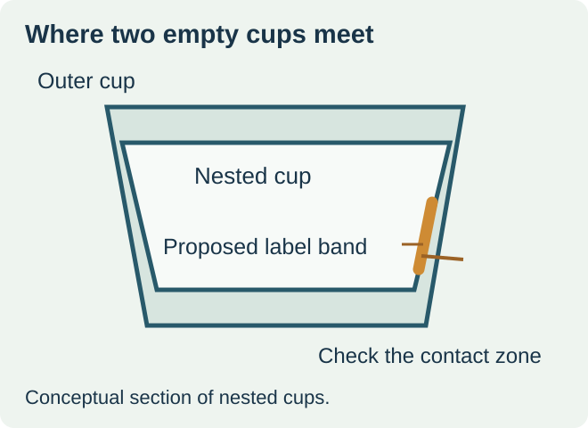
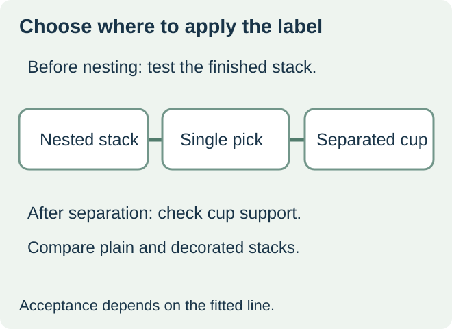

Order prelabeled cups only after the decorated stack separates reliably on the intended filler. If the cup line has no evidence for that stack, compare the cost and feasibility of labeling after separation. A flat artwork proof and a label fitted to one cup answer the visual fit question. The filler sees a stack, a pickup point, and a sequence of cups leaving the magazine.


Find the contact band between nested cups
Ask the cup supplier to identify the stacking ledge and the surfaces that touch when the cups are nested. Overlay the proposed label footprint on the sidewall drawing, including its seam, raised edge, or layered finish if present. A label that appears well below the sealing rim can still occupy a region swept by the inside wall of the next cup or by the magazine guide.
Equipment maker Serac lists denesting pitch and free movement in the stack among the checks for preformed cups. Use that as a reason to inspect your actual cup and feeder combination. A nominal cup diameter alone gives the buyer no separation result. Serac’s preformed-cup filling guidance
Choose the application point from what the line can support
| Candidate route | When to price it | Evidence to request |
|---|---|---|
| Label before nesting | Your supplier can deliver the agreed decorated stack and the filler accepts that stack | Finished cup construction, stack orientation and comparable feeder trial |
| Label after denesting | Bare cups feed reliably and a downstream position can support the cup | Actual position, cup support, available time and access after filling or sealing |
| Change the label footprint | A narrower panel or a different height may move the label away from the contact band | New wrap drawing, filled-cup presentation and another stack comparison |


For a hypothetical chilled dessert launch, the filler receives empty PP cups in stacks. The full-height label reaches the nesting band. A lower label outline is worth a sample if it preserves the usable display area. If the decorated stack still double-picks, move the application point downstream only if the line can hold and orient the separated cup. Specify which change solves which constraint before comparing quotes.
Run a plain-versus-decorated comparison
Start with the same cup item and confirm the supplied stack configuration. Compare a plain stack with a production-representative decorated stack in the normal feeder. Record stack height at the same count, release behavior and where the machine contacts the cup. Check first, middle and last picks as the stack load changes. Note double picks, missed picks, torn edges, scuffs and any transfer to an adjacent cup. Use the filling team’s own trial quantities and acceptance criteria.
Where the cup is labeled downstream, check the actual surface condition there, the supported speed, the seal area and the cup’s ability to resist the intended application force. Confirm the inspection point and separate the cost of labels, cup decoration, application work and any extra handling. Return to the cup sealer clearance guide if the footprint changes near the lip.
Discuss the unresolved label requirement
Send the cup supplier’s drawing and sample stacks, the label position and outline, the intended label construction, the filling line’s denester make or model, and the quantities by cup and artwork version. Review food label options and prepare a label specification inquiry. The contact page opens an email draft and lists email or WhatsApp for attachments. Supply, proof options, testing, pricing and timing require project confirmation.